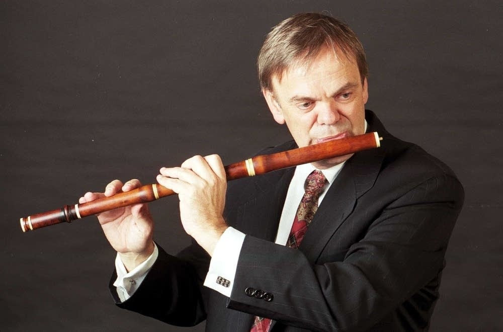

SLAVNÍ FLÉTNISTÉ
Pár slavných flétnistů, které byste měli znát:
Pro ty z Vás, kteří nikdy neviděli flétnistu zde najdete několik nejvýznamnějších
flétnistů. Samozřejmě - je jich mnohem více a zde Vám nabízím jen takovou drobnou
ochutnávku. Doufám, že si tato jména zapamatujete, jelikož v hudebním světě jsou
tito lidé "velká zvířata".
| FOTO |
|
 |
|
|
| JMÉNO |
Emanuel PAHUD
| Barthold KUIJKEN
| Jean Pierre RAMPAL
| James GALWAY
|